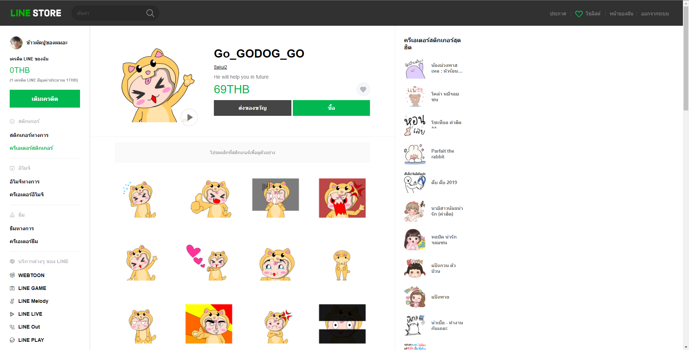

Creative Thinking
ผลงานชิ้นนี้ได้แรงบันดาลใจจากเพจ “Lowcos Cosplay”
โดยจะ cosplay เป็นอะไรก็ได้แต่มีเงื้อนไขของที่นำมาแต่งตัวนั้นต้องมีอยู่แล้ว ห้ามซื้อมาใหม่
ตัวละครที่ผมเลือกจึงเป็น Adam จากเรื่อง “มหาศึกคนชนเทพ หรือ Shuumatsu no Walküre”
ผมสีทองใช้ผ้าขุนหนูแทนการย้อมผม, แอปเปิลที่มีจากตู้เย็น,
ร่องของกล้ามทำให้เข้มขึ้นโดยใช้ถถ่านเขียน, ใบไม้ใช้แผ่นรองแก้วน้ำ

Face Shield
เป็นงานที่ให้ทำและนำเสนอ Fac Shield ออกมาอย่างไรก็ได้
ใน concept “Face Shield ที่ใส่และดูดี” ผมจึงเลือกหมวกและสายคล้องคอมารวมกัน
เพื่อให้ได้ออกมาดังภาย และการตัดต่อวิดัโอเพื่อนำเสนอให้ออกมาน่าสนใจมากที่สุด
Sticker LINE
Sticker Line ที่เกี่ยวกับตัวละครสมมุติใน concept “การแสดงอารมณ์”
หากสัตว์เลี้ยงสามารถแสดงอารมณ์ได้เหมือนกับมนุษย์จะเป็นอย่างไร เป็นความคิดริเริ่มในการออกแบบ
ตัวละครใน Sticker ตัวนี้ จึงได้ออกมาเป็นสุนัขสีเหลืองที่ได้ต้นแบบมาจาก สนุขสายพันธุ์ ลาบราดอร์ รีทรีฟเวอร์
ที่น่ารักและก็ยังมีหลากหลายท่าททางให้นำมาเป็นแรงบรรดาลใจได้ดี

Short Animation
Animation สั้นความยาว 1;35 นาที ว่าด้วยเรื่องนิทานพื้นบ้าน สุนัขและเศษเนื้อ
ที่เอามาดัดแปลงใหม่รวมกับนิทานเรื่องเทพารักษ์กับคนตัดไม้ เริ่มจากสุนัขที่เพิ่งได้เศษเนื้อมา
มันได้ไปชำเรืองมองเงาสะท้อนของตนและเนื้อบนผิวน้ำและเผลอทำเนื้อที่มันคาบอยู่หล่นลงไป ทันใดนั้น
เทวดาก็ปรากฏตัวขึ้นมาพร้อมยื่นข้อเสนอให้สุนัขเลือก ระหว่างเนื้อเกรดA
และสเต๊กเนื้อวากิวเจ้าสุนัขที่เต็มไปด้วยความโลภจึงได้เลือกทั้ง 2 อย่างเทวดาจึงพิโรธและลงโทษ
เจ้าหมาตัวนั้นด้วยบอลเก็งกีสเป็นอันจบบริบูรณ์